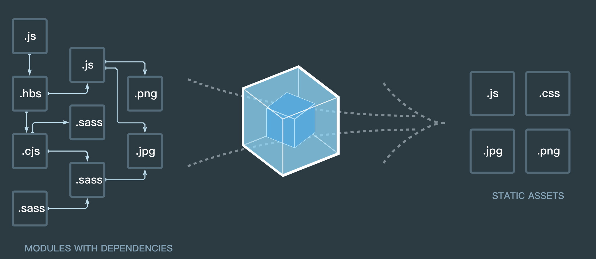
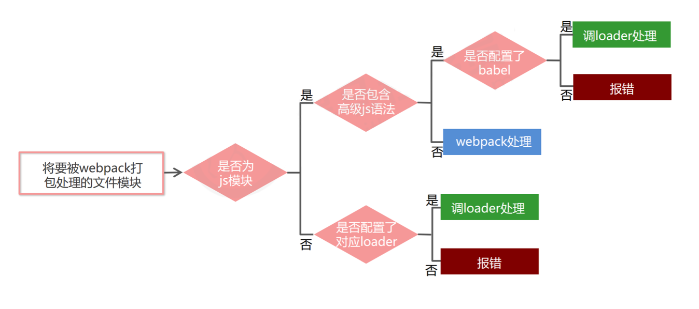
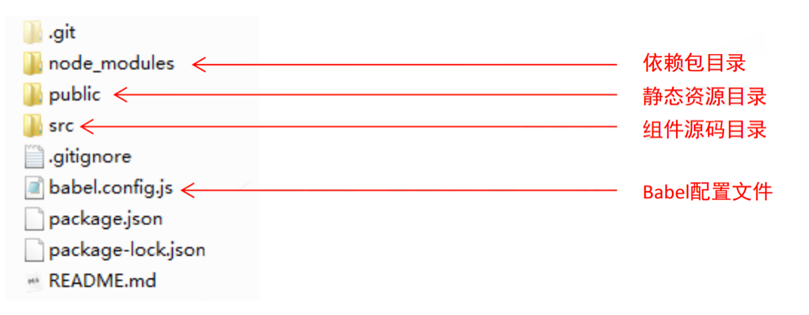

1.模块化的分类
1.1 模块化概述
传统开发模式的主要问题
① 命名冲突
② 文件依赖
通过模块化解决上述问题
- 模块化就是把单独的一个功能封装到一个模块（文件）中，模块之间相互隔离，但是可以通过特定的接口公开内部成
员，也可以依赖别的模块 - 模块化开发的好处：方便代码的重用，从而提升开发效率，并且方便后期的维护
1.2 浏览器端的模块化
1).AMD(Asynchronous Module Definition,异步模块定义)
代表产品为：Require.js
2).CMD(Common Module Definition,通用模块定义)
代表产品为：Sea.js
1.3 服务器端模块化规范
服务器端的模块化规范是使用CommonJS规范：
① 模块分为 单文件模块 与 包,一个文件就是一个模块，都拥有独立的作用域
② 模块成员导出： module.exports 和 exports
③ 模块成员导入： require('模块标识符')
1.4 大一统的模块化规范 – ES6模块化
在 ES6 模块化规范诞生之前， Javascript 社区已经尝试并提出了 AMD、 CMD、 CommonJS 等模块化规范。
但是，这些社区提出的模块化标准，还是存在一定的差异性与局限性、 并不是浏览器与服务器通用的模块化标准，例如：
- AMD 和 CMD 适用于浏览器端的 Javascript 模块化
- CommonJS 适用于服务器端的 Javascript 模块化
因此， ES6 语法规范中，在语言层面上定义了 ES6 模块化规范，是浏览器端与服务器端通用的模块化开发规范。
ES6模块化规范中定义：
- 每个js文件都是一个独立的模块
- 导入模块成员使用 import 关键字
- 暴露模块成员使用 export 关键字
小结：推荐使用ES6模块化，因为AMD，CMD局限使用与浏览器端，而CommonJS在服务器端使用。
ES6模块化是浏览器端和服务器端通用的规范.
1.5 Node.js 中通过 babel 体验 ES6 模块化
① npm install –save-dev @babel/core @babel/cli @babel/preset-env @babel/node
② npm install –save @babel/polyfill
③ 项目跟目录创建文件 babel.config.js
④ babel.config.js 文件内容如右侧代码
⑤ 通过 npx babel-node index.js 执行代码
const presets = [
["@babel/env", {
targets: {
edge: "17",
firefox: "60",
chrome: "67",
safari: "11.1"
}
}]
];
module.exports = { presets };1.6 ES6 模块化的基本语法
1.6.1 默认导出 与 默认导入
- 默认导出语法 export default 默认导出的成员
- 默认导入语法 import 接收名称 from ‘模块标识符’
// 导入模块成员
import m1 from './m1.js'
console.log(m1)
// 打印输出的结果为：
// { a: 10, c: 20, show: [Function: show] }// 当前文件模块为 m1.js
// 定义私有成员 a 和 c
let a = 10
let c = 20
// 外界访问不到变量 d ,因为它没有被暴露出去
let d = 30
function show() {}
// 将本模块中的私有成员暴露出去，供其它模块使用
export default {
a,
c,
show
}注意：每个模块中，只允许使用唯一的一次 export default，否则会报错！
1.6.2 按需导出 与 按需导入
- 按需导出语法 export let s1 = 10
- 按需导入语法 import { s1 } from ‘模块标识符’
// 导入模块成员
import { s1, s2 as ss2, say } from './m1.js'
console.log(s1) // 打印输出 aaa
console.log(ss2) // 打印输出 ccc
console.log(say) // 打印输出 [Function: say]// 当前文件模块为 m1.js
// 向外按需导出变量 s1
export let s1 = 'aaa'
// 向外按需导出变量 s2
export let s2 = 'ccc'
// 向外按需导出方法 say
export function say = function() {}1.6.3 直接导入并执行模块代码
有时候，我们只想单纯执行某个模块中的代码，并不需要得到模块中向外暴露的成员，此时，可以直接导入并执行模块代码。
// 直接导入并执行模块代码
import './m2.js'// 当前文件模块为 m2.js
// 在当前模块中执行一个 for 循环操作
for(let i = 0; i < 3; i++) {
console.log(i)
}2. webpack
2.1 当前 Web 开发面临的困境
- 文件依赖关系错综复杂
- 静态资源请求效率低
- 模块化支持不友好
- 浏览器对高级 Javascript 特性兼容程度较低
2.2 webpack 概述
webpack 是一个流行的前端项目构建工具（打包工具） ，可以解决当前 web 开发中所面临的困境。
webpack 提供了友好的模块化支持，以及代码压缩混淆、 处理 js 兼容问题、 性能优化等强大的功能，从而让程序员把
工作的重心放到具体的功能实现上，提高了开发效率和项目的可维护性。
目前绝大多数企业中的前端项目，都是基于 webpack 进行打包构建的。

2.3 webpack 的基本使用
2.3.1 创建列表隔行变色项目
① 新建项目空白目录，并运行 npm init –y 命令，初始化包管理配置文件 package.json
② 新建 src 源代码目录
③ 新建 src -> index.html 首页
④ 初始化首页基本的结构
⑤ 运行 npm install jquery –S 命令，安装 jQuery
⑥ 通过模块化的形式，实现列表隔行变色效果
2.3.2 在项目中安装和配置 webpack
① 运行 npm install webpack webpack-cli –D 命令，安装 webpack 相关的包
② 在项目根目录中，创建名为 webpack.config.js 的 webpack 配置文件
③ 在 webpack 的配置文件中，初始化如下基本配置：
module.exports = {
mode: 'development' // mode 用来指定构建模式
}④ 在 package.json 配置文件中的 scripts 节点下，新增 dev 脚本如下：
"scripts": {
"dev": "webpack" // script 节点下的脚本，可以通过 npm run 执行
}⑤ 在终端中运行 npm run dev 命令，启动 webpack 进行项目打包。
2.3.3 配置打包的入口与出口
webpack 的 4.x 版本中默认约定：
- 打包的入口文件为 src -> index.js
- 打包的输出文件为 dist -> main.js
如果要修改打包的入口与出口，可以在 webpack.config.js 中新增如下配置信息：
const path = require('path') // 导入 node.js 中专门操作路径的模块
module.exports = {
entry: path.join(__dirname, './src/index.js'), // 打包入口文件的路径
output: {
path: path.join(__dirname, './dist'), // 输出文件的存放路径
filename: 'bundle.js' // 输出文件的名称
}
}2.3.4 配置 webpack 的自动打包功能
① 运行 npm install webpack-dev-server –D 命令，安装支持项目自动打包的工具
② 修改 package.json -> scripts 中的 dev 命令如下：
"scripts": {
"dev": "webpack-dev-server" // script 节点下的脚本，可以通过 npm run 执行
}③ 将 src -> index.html 中， script 脚本的引用路径，修改为 “/buldle.js“
④ 运行 npm run dev 命令，重新进行打包
⑤ 在浏览器中访问 http://localhost:8080 地址，查看自动打包效果
注意：
- webpack-dev-server 会启动一个实时打包的 http 服务器
- webpack-dev-server 打包生成的输出文件，默认放到了项目根目录中，而且是虚拟的、看不见的
2.3.5 配置 html-webpack-plugin 生成预览页面
① 运行 npm install html-webpack-plugin –D 命令，安装生成预览页面的插件
② 修改 webpack.config.js 文件头部区域，添加如下配置信息：
// 导入生成预览页面的插件，得到一个构造函数
const HtmlWebpackPlugin = require('html-webpack-plugin')
const htmlPlugin = new HtmlWebpackPlugin({ // 创建插件的实例对象
template: './src/index.html', // 指定要用到的模板文件
filename: 'index.html' // 指定生成的文件的名称，该文件存在于内存中，在目录中不显示
})③ 修改 webpack.config.js 文件中向外暴露的配置对象，新增如下配置节点：
module.exports = {
plugins: [ htmlPlugin ] // plugins 数组是 webpack 打包期间会用到的一些插件列表
}2.3.6 配置自动打包相关的参数
// package.json中的配置
// --open 打包完成后自动打开浏览器页面
// --host 配置 IP 地址
// --port 配置端口
"scripts": {
"dev": "webpack-dev-server --open --host 127.0.0.1 --port 8888"
},2.4 webpack 中的加载器
2.4.1 通过 loader 打包非 js 模块
在实际开发过程中， webpack 默认只能打包处理以 .js 后缀名结尾的模块，其他非 .js 后缀名结
尾的模块， webpack 默认处理不了， 需要调用 loader 加载器才可以正常打包，否则会报错！
loader 加载器可以协助 webpack 打包处理特定的文件模块，比如：
- less-loader 可以打包处理 .less 相关的文件
- sass-loader 可以打包处理 .scss 相关的文件
- url-loader 可以打包处理 css 中与 url 路径相关的文件
2.4.2 loader 的调用过程
2.5 webpack 中加载器的基本使用
- CSS
- LESS
- SCSS
- PostCSS
- JavaScript
- Image/Font
- Vue
2.5.1 打包处理 css 文件
① 运行 npm i style-loader css-loader -D 命令，安装处理 css 文件的 loader
② 在 webpack.config.js 的 module -> rules 数组中，添加 loader 规则如下：
// 所有第三方文件模块的匹配规则
module: {
rules: [{
test: /\.css$/, use: ['style-loader', 'css-loader']
}
]
}其中， test 表示匹配的文件类型， use 表示对应要调用的 loader
注意：
- use 数组中指定的 loader 顺序是固定的
- 多个 loader 的调用顺序是：从后往前调用
2.5.2 打包处理 less 文件
① 运行 npm i less-loader less -D 命令
② 在 webpack.config.js 的 module -> rules 数组中，添加 loader 规则如下：
// 所有第三方文件模块的匹配规则
module: {
rules: [{
test: /\.less$/, use: ['style-loader', 'css-loader', 'less-loader']
}]
}2.5.3 打包处理 scss 文件
① 运行 npm i sass-loader node-sass -D 命令
② 在 webpack.config.js 的 module -> rules 数组中，添加 loader 规则如下：
// 所有第三方文件模块的匹配规则
module: {
rules: [{
test: /\.scss$/, use: ['style-loader', 'css-loader', 'sass-loader']
}]
}2.5.4 配置 postCSS 自动添加 css 的兼容前缀
① 运行 npm i postcss-loader autoprefixer -D 命令
② 在项目根目录中创建 postcss 的配置文件 postcss.config.js，并初始化如下配置：
const autoprefixer = require('autoprefixer') // 导入自动添加前缀的插件
module.exports = {
plugins: [ autoprefixer ] // 挂载插件
}③ 在 webpack.config.js 的 module -> rules 数组中，修改 css 的 loader 规则如下：
module: {
rules: [{
test:/\.css$/, use: ['style-loader', 'css-loader', 'postcss-loader'
]}
]
}2.5.5 打包样式表中的图片和字体文件
① 运行 npm i url-loader file-loader -D 命令
② 在 webpack.config.js 的 module -> rules 数组中，添加 loader 规则如下:
module: {
rules: [{
test: /\.jpg|png|gif|bmp|ttf|eot|svg|woff|woff2$/,
use: 'url-loader?limit=16940'
}]
}其中 ? 之后的是 loader 的参数项。
limit 用来指定图片的大小，单位是字节(byte),只有小于 limit 大小的图片，才会被转为 base64 图片
2.5.6. 打包处理 js 文件中的高级语法
① 安装babel转换器相关的包： npm i babel-loader @babel/core @babel/runtime -D
② 安装babel语法插件相关的包： npm i @babel/preset-env @babel/plugin-transformruntime @babel/plugin-proposal-class-properties –D
③ 在项目根目录中，创建 babel 配置文件 babel.config.js 并初始化基本配置如下：
module.exports = {
presets: [ '@babel/preset-env' ],
plugins: [ '@babel/plugin-transform-runtime', '@babel/plugin-proposalclass-properties’ ]
}④ 在 webpack.config.js 的 module -> rules 数组中，添加 loader 规则如下：
// exclude 为排除项，表示 babel-loader 不需要处理 node_modules 中的 js 文件
{ test: /\.js$/, use: 'babel-loader', exclude: /node_modules/ }3. Vue 单文件组件
3.1 传统组件的问题和解决方案
3.1.1 问题
- 全局定义的组件必须保证组件的名称不重复
- 字符串模板缺乏语法高亮，在 HTML 有多行的时候，需要用到丑陋的 \
- 不支持 CSS 意味着当 HTML 和 JavaScript 组件化时， CSS 明显被遗漏
- 没有构建步骤限制，只能使用 HTML 和 ES5 JavaScript, 而不能使用预处理器（如： Babel）
3.1.2 解决方案
针对传统组件的问题， Vue 提供了一个解决方案 —— 使用 Vue 单文件组件。
3.2 Vue单文件组件的基本用法
单文件组件的组成结构
- template 组件的模板区域
- script 业务逻辑区域
- style 样式区域
<template>
<!-- 这里用于定义Vue组件的模板内容 -->
</template>
<script>
// 这里用于定义Vue组件的业务逻辑
export default {
data: () { return {} }, // 私有数据
methods: {} // 处理函数
// ... 其它业务逻辑
}
</script>
<style scoped>
/* 这里用于定义组件的样式 */
</style>3.3 webpack 中配置 vue 组件的加载器
① 运行 npm i vue-loader vue-template-compiler -D 命令
② 在 webpack.config.js 配置文件中，添加 vue-loader 的配置项如下：
const VueLoaderPlugin = require('vue-loader/lib/plugin')
module.exports = {
module: {
rules: [
// ... 其它规则
{ test: /\.vue$/, loader: 'vue-loader' }
]
},
plugins: [
// ... 其它插件
new VueLoaderPlugin() // 请确保引入这个插件！
]
}3.4 在 webpack 项目中使用 vue
① 运行 npm i vue –S 安装 vue
② 在 src -> index.js 入口文件中，通过 import Vue from ‘vue’ 来导入 vue 构造函数
③ 创建 vue 的实例对象，并指定要控制的 el 区域
④ 通过 render 函数渲染 App 根组件
// 1. 导入 Vue 构造函数
import Vue from 'vue'
// 2. 导入 App 根组件
import App from './components/App.vue'
const vm = new Vue({
// 3. 指定 vm 实例要控制的页面区域
el: '#app',
// 4. 通过 render 函数，把指定的组件渲染到 el 区域中
render: h => h(App)
})3.5 webpack 打包发布
上线之前需要通过webpack将应用进行整体打包，可以通过 package.json 文件配置打包命令：
// 在package.json文件中配置 webpack 打包命令
// 该命令默认加载项目根目录中的 webpack.config.js 配置文件
"scripts": {
// 用于打包的命令
"build": "webpack -p",
// 用于开发调试的命令
"dev": "webpack-dev-server --open --host 127.0.0.1 --port 3000",
},4. Vue 脚手架
4.1 Vue 脚手架的基本用法
Vue 脚手架用于快速生成 Vue 项目基础架构，其官网地址为： https://cli.vuejs.org/zh/
使用步骤
- 安装 3.x 版本的 Vue 脚手架：
npm install -g @vue/cli
基于3.x版本的脚手架创建vue项目
// 1. 基于 交互式命令行 的方式，创建 新版 vue 项目
vue create my-project
// 2. 基于 图形化界面 的方式，创建 新版 vue 项目
vue ui
// 3. 基于 2.x 的旧模板，创建 旧版 vue 项目
npm install -g @vue/cli-init
vue init webpack my-project
4.2 Vue 脚手架生成的项目结构分析
4.3 Vue 脚手架的自定义配置
通过 package.json 配置项目
// 必须是符合规范的json语法 "vue": { "devServer": { "port": "8888", "open" : true } },注意： 不推荐使用这种配置方式。因为 package.json 主要用来管理包的配置信息；为了方便维护，推荐将 vue 脚
手架相关的配置，单独定义到 vue.config.js 配置文件中。通过单独的配置文件
① 在项目的跟目录创建文件 vue.config.js
② 在该文件中进行相关配置，从而覆盖默认配置
// vue.config.js
module.exports = {
devServer: {
port: 8888
}
}5. Element-UI 的基本使用
Element-UI： 一套为开发者、设计师和产品经理准备的基于 Vue 2.0 的桌面端组件库。
官网地址为： http://element-cn.eleme.io/#/zh-CN
5.1 基于命令行方式手动安装
① 安装依赖包 npm i element-ui –S
② 导入 Element-UI 相关资源
// 导入组件库
import ElementUI from 'element-ui';
// 导入组件相关样式
import 'element-ui/lib/theme-chalk/index.css';
// 配置 Vue 插件
Vue.use(ElementUI);5.2 基于图形化界面自动安装
① 运行 vue ui 命令，打开图形化界面
② 通过 Vue 项目管理器， 进入具体的项目配置面板
③ 点击 插件 -> 添加插件，进入插件查询面板
④ 搜索 vue-cli-plugin-element 并安装
⑤ 配置插件，实现按需导入，从而减少打包后项目的体积